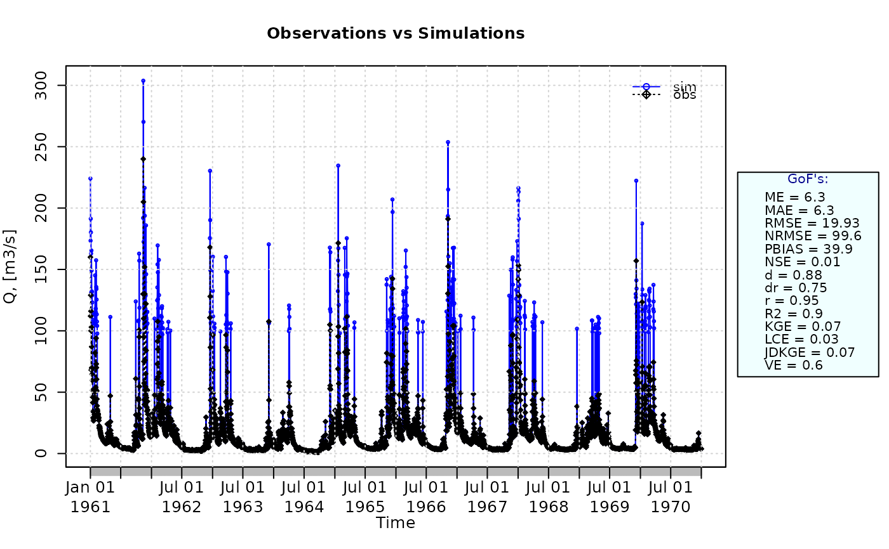

Annual Peak Flow Bias
APFB.RdAnnual peak flow bias between sim and obs, with treatment of missing values.
This function was prposed by Mizukami et al. (2019) to identify differences in high (streamflow) values. See Details.
Usage
APFB(sim, obs, ...)
# Default S3 method
APFB(sim, obs, na.rm=TRUE, start.month=1, out.PerYear=FALSE,
fun=NULL, ...,
epsilon.type=c("none", "Pushpalatha2012", "otherFactor", "otherValue"),
epsilon.value=NA)
# S3 method for class 'data.frame'
APFB(sim, obs, na.rm=TRUE, start.month=1, out.PerYear=FALSE,
fun=NULL, ...,
epsilon.type=c("none", "Pushpalatha2012", "otherFactor", "otherValue"),
epsilon.value=NA)
# S3 method for class 'matrix'
APFB(sim, obs, na.rm=TRUE, start.month=1, out.PerYear=FALSE,
fun=NULL, ...,
epsilon.type=c("none", "Pushpalatha2012", "otherFactor", "otherValue"),
epsilon.value=NA)
# S3 method for class 'zoo'
APFB(sim, obs, na.rm=TRUE, start.month=1, out.PerYear=FALSE,
fun=NULL, ...,
epsilon.type=c("none", "Pushpalatha2012", "otherFactor", "otherValue"),
epsilon.value=NA)Arguments
- sim
numeric, zoo, matrix or data.frame with simulated values
- obs
numeric, zoo, matrix or data.frame with observed values
- na.rm
a logical value indicating whether 'NA' should be stripped before the computation proceeds.
When an 'NA' value is found at the i-th position inobsORsim, the i-th value ofobsANDsimare removed before the computation.- start.month
[OPTIONAL]. Only used when the (hydrological) year of interest is different from the calendar year.
numeric in [1:12] indicating the starting month of the (hydrological) year. Numeric values in [1, 12] represent months in [January, December]. By default
start.month=1.- out.PerYear
logical value indicating whether the output should include the annual peak flow bias computed for each individual year or not.
Valid values are:
-) FALSE: the output is a numeric with the mean annual peak flow bias.
-) TRUE: the output is a list including both the overall APFB value and the individual yearly values.
- fun
function to be applied to
simandobsin order to obtain transformed values thereof before computing this goodness-of-fit index.The first argument MUST BE a numeric vector with any name (e.g.,
x), and additional arguments are passed using....- ...
arguments passed to
fun, in addition to the mandatory first numeric vector.- epsilon.type
argument used to define a numeric value to be added to both
simandobsbefore applyingfun.It is was designed to allow the use of logarithm and other similar functions that do not work with zero values.
Valid values of
epsilon.typeare:1) "none":
simandobsare used byfunwithout the addition of any numeric value. This is the default option.2) "Pushpalatha2012": one hundredth (1/100) of the mean observed values is added to both
simandobsbefore applyingfun, as described in Pushpalatha et al. (2012).3) "otherFactor": the numeric value defined in the
epsilon.valueargument is used to multiply the the mean observed values, instead of the one hundredth (1/100) described in Pushpalatha et al. (2012). The resulting value is then added to bothsimandobs, before applyingfun.4) "otherValue": the numeric value defined in the
epsilon.valueargument is directly added to bothsimandobs, before applyingfun.- epsilon.value
-) when
epsilon.type="otherValue"it represents the numeric value to be added to bothsimandobsbefore applyingfun.
-) whenepsilon.type="otherFactor"it represents the numeric factor used to multiply the mean of the observed values, instead of the one hundredth (1/100) described in Pushpalatha et al. (2012). The resulting value is then added to bothsimandobsbefore applyingfun.
Details
The annual peak flow bias (APFB; Mizukami et al., 2019) is designed to drive the calibration of hydrological models focused in the reproduction of high-flow events.
In the computation of this index, the annual peak flow is first identified for each hydrological year in both sim and obs. The mean of the resulting annual peak flow series is then computed separately for simulated and observed data.
The annual peak flow bias is defined as the absolute relative difference between the mean simulated annual peak flow and the mean observed annual peak flow.
$$APFB = \sqrt{ \left( \frac{\mu_{peak\,Q_s}}{\mu_{peak\,Q_o}} - 1 \right)^2 }$$
where:
\mu_{peak\,Q_s}: mean of the simulated annual peak flow series
\mu_{peak\,Q_o}: mean of the observed annual peak flow series
The APFB metric ranges from 0 to Inf. The optimal value is 0, indicating perfect agreement between simulated and observed annual peak flows.
Essentially, the closer to 0, the more similar the magnitude of simulated and observed annual peak flows.
Because APFB focuses exclusively on annual maxima, it is particularly suitable for calibration tasks targeting flood estimation, extreme-flow simulation, or infrastructure design applications. However, because APFB evaluates only annual maxima, it does not assess overall hydrograph dynamics and is typically used in combination with complementary metrics (e.g., KGE or NSE) when broader performance evaluation is required.
Value
If out.PerYear=FALSE: numeric with the mean annual peak flow bias between sim and obs. If sim and obs are matrices, the output value is a vector, with the mean annual peak flow bias between each column of sim and obs.
If out.PerYear=TRUE: a list of two elements:
- APFB.value
numeric with the mean annual peak flow bias between
simandobs. Ifsimandobsare matrices, the output value is a vector, with the mean annual peak flow bias between each column ofsimandobs.- APFB.PerYear
-) If
simandobsare not data.frame/matrix, the output is numeric, with the mean annual peak flow bias obtained for the individual years betweensimandobs.-) If
simandobsare data.frame/matrix, this output is a data.frame, with the mean annual peak flow bias obtained for the individual years betweensimandobs.
References
Mizukami, N.; Rakovec, O.; Newman, A.J.; Clark, M.P.; Wood, A.W.; Gupta, H.V.; Kumar, R.: (2019). On the choice of calibration metrics for "high-flow" estimation using hydrologic models, Hydrology Earth System Sciences 23, 2601-2614, doi:10.5194/hess-23-2601-2019.
Note
obs and sim has to have the same length/dimension
The missing values in obs and sim are removed before the computation proceeds, and only those positions with non-missing values in obs and sim are considered in the computation
Examples
##################
# Example 1: Looking at the difference between 'NSE', 'wNSE', and 'APFB'
# Loading daily streamflows of the Ega River (Spain), from 1961 to 1970
data(EgaEnEstellaQts)
obs <- EgaEnEstellaQts
# Simulated daily time series, created equal to the observed values and then
# random noise is added only to high flows, i.e., those equal or higher than
# the quantile 0.9 of the observed values.
sim <- obs
hQ.thr <- quantile(obs, probs=0.9, na.rm=TRUE)
hQ.index <- which(obs >= hQ.thr)
hQ.n <- length(hQ.index)
sim[hQ.index] <- sim[hQ.index] + rnorm(hQ.n, mean=mean(sim[hQ.index], na.rm=TRUE))
# Traditional Nash-Sutcliffe eficiency
NSE(sim=sim, obs=obs)
#> [1] 0.002299849
# Weighted Nash-Sutcliffe efficiency (Hundecha and Bardossy, 2004)
wNSE(sim=sim, obs=obs)
#> [1] 0.2800836
# APFB (Mizukami et al., 2019):
APFB(sim=sim, obs=obs)
#> [1] 0.2941325
##################
# Example 2:
# Loading daily streamflows of the Ega River (Spain), from 1961 to 1970
data(EgaEnEstellaQts)
obs <- EgaEnEstellaQts
# Generating a simulated daily time series, initially equal to the observed series
sim <- obs
# Computing the 'APFB' for the "best" (unattainable) case
APFB(sim=sim, obs=obs)
#> [1] 0
##################
# Example 3: APFB for simulated values created equal to the observed values and then
# random noise is added only to high flows, i.e., those equal or higher
# than the quantile 0.9 of the observed values.
sim <- obs
hQ.thr <- quantile(obs, probs=0.9, na.rm=TRUE)
hQ.index <- which(obs >= hQ.thr)
hQ.n <- length(hQ.index)
sim[hQ.index] <- sim[hQ.index] + rnorm(hQ.n, mean=mean(sim[hQ.index], na.rm=TRUE))
ggof(sim, obs)

APFB(sim=sim, obs=obs)
#> [1] 0.293427
##################
# Example 4: APFB for simulated values created equal to the observed values and then
# random noise is added only to high flows, i.e., those equal or higher
# than the quantile 0.9 of the observed values and applying (natural)
# logarithm to 'sim' and 'obs' during computations.
APFB(sim=sim, obs=obs, fun=log)
#> [1] 0.06809021
# Verifying the previous value:
lsim <- log(sim)
lobs <- log(obs)
APFB(sim=lsim, obs=lobs)
#> [1] 0.06809021
##################
# Example 5: APFB for simulated values created equal to the observed values and then
# random noise is added only to high flows, i.e., those equal or higher
# than the quantile 0.9 of the observed values and applying a
# user-defined function to 'sim' and 'obs' during computations
fun1 <- function(x) {sqrt(x+1)}
APFB(sim=sim, obs=obs, fun=fun1)
#> [1] 0.1622292
# Verifying the previous value, with the epsilon value following Pushpalatha2012
sim1 <- sqrt(sim+1)
obs1 <- sqrt(obs+1)
APFB(sim=sim1, obs=obs1)
#> [1] 0.1622292